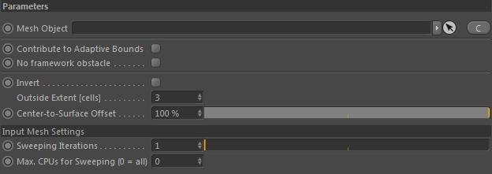
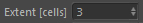
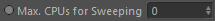

Quicktab
Parameters
Parameters

Mesh Object
A valid Effex mesh node meeting the Effex Volume Conditions (see Volume description).
A volumetric representation (signed distance field) is generated out of the mesh.
Contribute to Adaptive Bounds
If this is checked this volume will be contributing to the adaptive bounds of the framework.
No framework obstacles
If checked this volume will not be taken into account in the framework as a volume obstacle.
Note: It will NOT affect if this is a Bullet rigid body obstacle or not.
Invert
Inverts the inside and the outside.
Outside Extent [cells]

The bounding box of the volume covers the volume mesh + this user-defined extent (given in voxels/grid cells). Usually the default value of 3 cells is more than enough.
However, if you for example invert the volume, you may want to increase the extent to have the Volume defined in more distant areas as well.
Larger extents make the volume mesh generation slower.
Center-to-surface Offset
As the Volume is aware of its inside you can shrink the inside volume area. 100% means the full inside area is used. Lowering the value will shrink the inside in direction of the surface.
This can be used to for example emit data only near the surface.
Parameters::Input Mesh Settings
Sweeping iterations
Calculating the Volume's sdf (see top of page) is an iterative process called 'Sweeping'.
Higher values MAY result in more accurate distances (and therefore better volume and surface normals) but makes the Volume Generation slower. Most of the time sticking with 1 iteration is fine.
Setting 2 iterations is the best trade-off between good accuracy and performance. You probably will never use more, though it's up to you.
Max. CPUs for Sweeping (0 = all)

You can exclusively set the amount of CPU threads (including hyperthreads) to use for the sweeping. The default value of 0 means all available cpu threads are used.